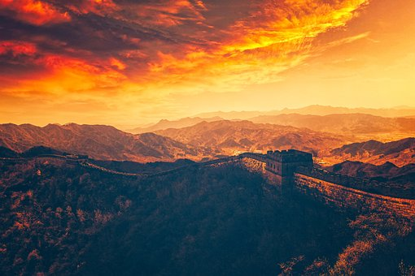
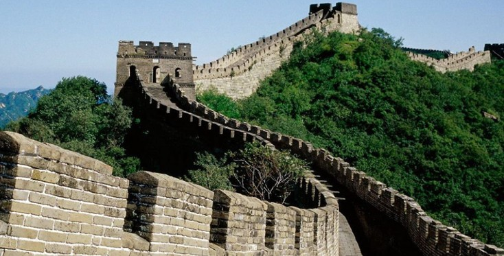
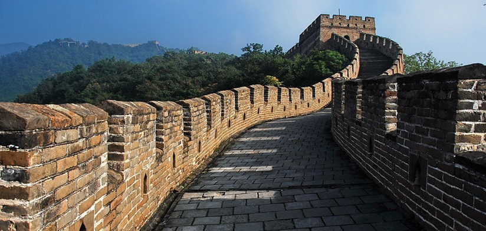
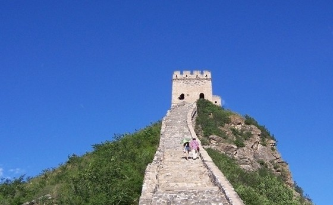
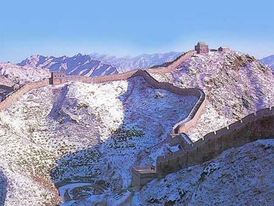
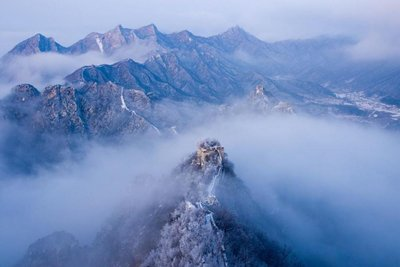
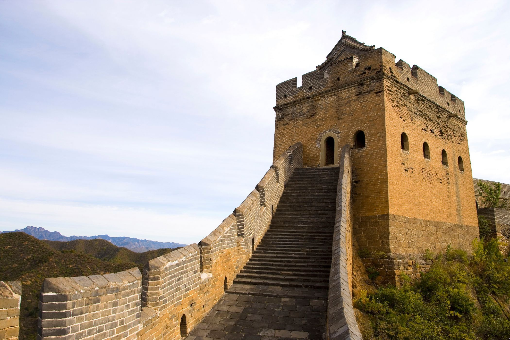
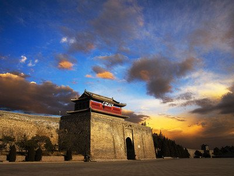
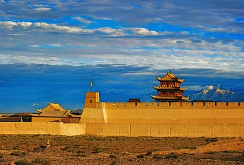
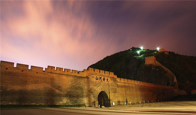

长城
the Great Wall

长城（the Great Wall）
又称万里长城
是中国古代的军事防御工事，是一道高大、坚固而且连绵不断的长垣，用以限隔敌骑的行动。
秦灭六国统一天下后，秦始皇连接和修缮战国长城，始有万里长城之称 。
根据文物和测绘部门的全国性长城资源调查结果，明长城总长度为8851.8千米，秦汉及早期长城超过1万千米，总长超过2.1万千米 。
1987年12月，长城被列为世界文化遗产 。2020年11月26日，国家文物局发布了第一批国家级长城重要点段名单 。
更多资料
the more
-
一些地方完全利用危崖绝壁、江河湖泊作为天然屏障，真可以说是巧夺天工。
如像居庸关、八达岭的长城都是沿着山岭的脊背修筑，有的地段从城墙外侧看去非常险峻，内侧则甚是平缓。
修筑长城，是针对西北边地实情所采取的积极措施，是化被动为主动
明朝是最后一个大修长城的朝代，今天人们所看到的长城多是此时修筑 。
长城不是一道单纯孤立的城墙，而是以城墙为主体，同大量的城、障、亭、标相结合的防御体系。
既能控制险要，又可节约人力和材料，以达“一夫当关，万夫莫开”的效果
- 
著名九大长城景点
八达岭长城
八达岭长城位于北京延庆，是明长城最具代表性的一段，居庸关的前哨，海拔高度1015米，地势险要，历来是兵家必争之地，是明代重要的军事关隘和首都北京的重要屏障。登上这里的长城，居高临下，尽览崇山峻岭的壮丽景色。迄今为止，已有包括奥巴马、尼克松、撒切尔夫人在内的三百多位知名人士到此游览，八达岭景区以其宏伟的景观、完善的设施和深厚的文化历史内涵而著称于世。史称天下九塞之一，是万里长城的精华，在明长城中独具代表性。 八达岭长城博物馆以万里长城为主题，全面反映长城的历史、政治、军事、经济、文化的综合性博物馆中国长城博物馆位于八达岭关城外，1994年建成开放。
慕田峪长城
慕田峪长城位于怀柔区境内，是新北京十六景之一。西接居庸关长城，东连古北口，开放的2250米长城段其特点是长城两边均有垛口，特别是正关台三座敌楼并矗，著名的长城景观箭扣、牛角边、鹰飞倒仰等位于慕田峪长城西端，是万里长城的精华所在。慕田峪长城山峦叠嶂，植被覆盖率达90%以上。慕田峪长城设有国内一流的登城缆车、开发了中华梦石城、施必得滑道等项目，形成了长城文化、石文化和体育健身娱乐有机结合。英国前首相梅杰，美国前总统克林顿等多位外国首脑到慕田峪游览。1992年被评为北京旅游世界之最。2002年被评为4A级景区。
司马台长城
独具“险、密、奇、巧、全”五大特点的司马台长城，位于北京市密云县东北部的古北口镇境内，距北京120公里。它东起望京楼，西至后川口，全长5.4公里，敌楼35座，整段长城构思精巧，设计奇特，结构新颖，造型各异，堪称万里长城的精华。著名长城专家罗哲文教授赞誉道：中国长城是世界之最，而司马台长城又堪称中国长城之最。司马台长城1987年被列入世界遗产名录，属国家级重点文物保护单位，是我国唯一保留明代原貌的古建筑遗址。
古北口长城
古北口长城是中国长城史上最完整的长城体系。由北齐长城和明长城共同组成，包括卧虎山、蟠龙山、金山岭和司马台4个城段。古北口是山海关、居庸关两关之间的长城要塞，为辽东平原和内蒙古通往中原地区的咽喉，历来是兵家必争之地，尤其是在辽、金、元、明、清这五朝，大大小小争夺古北口的战役从未停止过，因此长城的作用突显得尤为重要。
箭扣长城
箭扣长城位于京郊怀柔县西北八道河乡境内，距怀柔县城约30公里，山势非常富于变化，险峰断崖之上的长城也显得更加雄奇险要。箭扣长城因整段长城蜿蜒呈W 状，形如满弓扣箭而得名。箭扣长城是明代万里长城最著名的险段之一，是近年来各种长城画册中上镜率最高的一段，向来是长城摄影的热点。
金山岭长城
金山岭长城位于距北京市区140公里密云县与河北滦平县交界的燕山山脉中。西起龙峪口，东止望京楼，全线10.5公里。沿线有建筑各异的敌搂67座，烽火台2座，大小关隘5处，这里长城上敌楼密集，一般50-100米一座，墙体以巨石为基，高5-8米，并设有拦马墙、垛墙和障墙，形式多样，各具特色。被誉为“万里长城，金山独秀”。
山海关长城
山海关长城是万里长城的入海处。现属山海关境内的长城全长26公里，主要包括：老龙头长城、南翼长城关城长城、北翼长城、角山长城、三道关长城及九门口长城等地段。老龙头长城是长城入海的端头部分，有“中华之魂”的盛誉。山海关城由关城、东罗城、西罗城、南翼城、北翼城、威远城和宁海城七大城堡构成，四周有长4769米、高11.6米、厚10余米的城墙，墙体高大坚实，气势宏伟。在东、西、南、北建有四个城门，城东南隅、东北隅建有角楼，城中间建有雄伟的钟鼓楼。整个卫城建筑规模宏伟，防御工程坚固。山海关是明代创建“卫所兵制”的产物，明代的“屯田制”和改革政策又对山海关的巩固和发展起到了重要的作用。
嘉峪关长城
嘉峪关长城是明长城西端起点，建于明洪武五年（1372年），目前保存最完整的一座城关，河西第一隘口，也是丝绸之路上的重要一站。城关由内城、外城和城壕组成的完整防御体系。现在看到的城关以内城为主，黄土夯筑而成，外包城砖，坚固雄伟。城关两端的城墙横穿戈壁，可以体会到大漠孤城的苍凉。现代肖草《长城》诗：“风吹沙漠千山远，雪舞祁连六月寒；登上墙台论楚汉，长城嘉峪见雄关”给予真实诠释。
大境门长城
大境门长城位于河北省张家口市市区，长城中唯一一座以门命名的关口。长城四大关口之一。大境门长城修筑于明成化年间，坐落在高耸入云的东、西太平山间，据长城之要隘，扼边关之锁钥。大境门门墙高12米，底长13米，宽9米。西侧有明万历年间开凿的西境门（小境门）。景区有西太平山长城公园，来远堡，小境门，关帝庙，二郎庙，山神庙，等众多明清历史遗迹。为“万里长城长城第一门”。